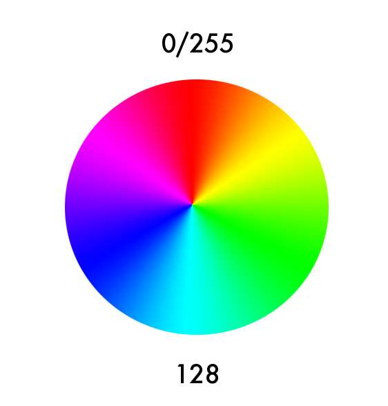
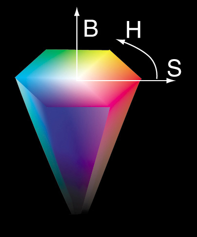

ofColor

class methods
- ofColor_()
- clamp()
- fromHex()
- fromHsb()
- getBrightness()
- getClamped()
- getHex()
- getHsb()
- getHue()
- getHueAngle()
- getInverted()
- getLerped()
- getLightness()
- getSaturation()
- invert()
- lerp()
- limit()
- operator!=()
- operator*()
- operator*=()
- operator+()
- operator+=()
- operator-()
- operator-=()
- operator/()
- operator/=()
- operator=()
- operator==()
- operator[]()
- set()
- setBrightness()
- setHex()
- setHsb()
- setHue()
- setHueAngle()
- setSaturation()
variables
- PixelType a
- ofColor_ aliceBlue
- ofColor_ antiqueWhite
- ofColor_ aqua
- ofColor_ aquamarine
- ofColor_ azure
- PixelType b
- ofColor_ beige
- ofColor_ bisque
- ofColor black
- ofColor_ blanchedAlmond
- ofColor blue
- ofColor_ blueSteel
- ofColor_ blueViolet
- ofColor_ brown
- ofColor_ burlyWood
- ofColor_ cadetBlue
- ofColor_ chartreuse
- ofColor_ chocolate
- ofColor_ coral
- ofColor_ cornflowerBlue
- ofColor_ cornsilk
- ofColor_ crimson
- ofColor cyan
- ofColor_ darkBlue
- ofColor_ darkCyan
- ofColor_ darkGoldenRod
- ofColor_ darkGray
- ofColor_ darkGreen
- ofColor_ darkGrey
- ofColor_ darkKhaki
- ofColor_ darkMagenta
- ofColor_ darkOliveGreen
- ofColor_ darkOrchid
- ofColor_ darkRed
- ofColor_ darkSalmon
- ofColor_ darkSeaGreen
- ofColor_ darkSlateBlue
- ofColor_ darkSlateGray
- ofColor_ darkSlateGrey
- ofColor_ darkTurquoise
- ofColor_ darkViolet
- ofColor_ darkorange
- ofColor_ deepPink
- ofColor_ deepSkyBlue
- ofColor_ dimGray
- ofColor_ dimGrey
- ofColor_ dodgerBlue
- ofColor_ fireBrick
- ofColor_ floralWhite
- ofColor_ forestGreen
- ofColor_ fuchsia
- PixelType g
- ofColor_ gainsboro
- ofColor_ ghostWhite
- ofColor_ gold
- ofColor_ goldenRod
- ofColor gray
- ofColor green
- ofColor_ greenYellow
- ofColor_ grey
- ofColor_ honeyDew
- ofColor_ hotPink
- ofColor_ indianRed
- ofColor_ indigo
- ofColor_ ivory
- ofColor_ khaki
- ofColor_ lavender
- ofColor_ lavenderBlush
- ofColor_ lawnGreen
- ofColor_ lemonChiffon
- ofColor_ lightBlue
- ofColor_ lightCoral
- ofColor_ lightCyan
- ofColor_ lightGoldenRodYellow
- ofColor_ lightGray
- ofColor_ lightGreen
- ofColor_ lightGrey
- ofColor_ lightPink
- ofColor_ lightSalmon
- ofColor_ lightSeaGreen
- ofColor_ lightSkyBlue
- ofColor_ lightSlateGray
- ofColor_ lightSlateGrey
- ofColor_ lightSteelBlue
- ofColor_ lightYellow
- ofColor_ lime
- ofColor_ limeGreen
- ofColor_ linen
- ofColor magenta
- ofColor_ maroon
- ofColor_ mediumAquaMarine
- ofColor_ mediumBlue
- ofColor_ mediumOrchid
- ofColor_ mediumPurple
- ofColor_ mediumSeaGreen
- ofColor_ mediumSlateBlue
- ofColor_ mediumSpringGreen
- ofColor_ mediumTurquoise
- ofColor_ mediumVioletRed
- ofColor_ midnightBlue
- ofColor_ mintCream
- ofColor_ mistyRose
- ofColor_ moccasin
- ofColor_ navajoWhite
- ofColor_ navy
- ofColor_ oldLace
- ofColor_ olive
- ofColor_ oliveDrab
- ofColor_ orange
- ofColor_ orangeRed
- ofColor_ orchid
- ofColor_ paleGoldenRod
- ofColor_ paleGreen
- ofColor_ paleTurquoise
- ofColor_ paleVioletRed
- ofColor_ papayaWhip
- ofColor_ peachPuff
- ofColor_ peru
- ofColor_ pink
- ofColor_ plum
- ofColor_ powderBlue
- ofColor_ purple
- PixelType r
- ofColor red
- ofColor_ rosyBrown
- ofColor_ royalBlue
- ofColor_ saddleBrown
- ofColor_ salmon
- ofColor_ sandyBrown
- ofColor_ seaGreen
- ofColor_ seaShell
- ofColor_ sienna
- ofColor_ silver
- ofColor_ skyBlue
- ofColor_ slateBlue
- ofColor_ slateGray
- ofColor_ slateGrey
- ofColor_ snow
- ofColor_ springGreen
- ofColor_ steelBlue
- ofColor_ tan
- ofColor_ teal
- ofColor_ thistle
- ofColor_ tomato
- ofColor_ turquoise
- ofColor_ violet
- ofColor_ wheat
- ofColor white
- ofColor_ whiteSmoke
- ofColor yellow
- ofColor_ yellowGreen
ofColor represents a color in openFrameworks. Colors are usually defined by specifying a red, green, and blue component (RGB), and a transparency (alpha) component. You can also specify colors using hue, saturation and brightness (HSB).
For example:
// set red, component by component
<a href="../types/ofColor.html" class="docs_class" >ofColor</a> red;
red.r=255;
red.g=0;
red.b=0;
ofSetColor(red);
// draw color is now red
// shorter notation is also possible
<a href="../types/ofColor.html" class="docs_class" >ofColor</a> green(0, 255, 0);
ofSetColor(green);
// draw color is now green
// or even shorter
ofSetColor( <a href="../types/ofColor.html" class="docs_class" >ofColor</a>(0, 0, ofRandom( 128, 255 ) );
// draw color is now a random blue
ofColor also enables a lot of extra functionality like using HSB instead of color spectrums, lerping or linearly interpolating between colors, and inverting colors, among other things.
ofColor is templated, which means that it has several different ways it can be created. These are probably best to leave as they are because there's already a few kinds typedefed for you. The default ofColor uses unsigned char values (0 to 255), but you can make an ofFloatColor if you want to work with floating point numbers between 0 and 1, or ofShortColor if you want to work with integers between 0 and 65,535.
HSB
You're probably familiar with RGB colors already, but HSB is a big part of ofColor. It uses a hue value (for the standard ofColor the range for this value is between 0 and 255) to determine what the hue (the 'color' in the sense of a color in the rainbow) will be:

Approximate hues for some common colors:
- Red: 0 (wrapped round from 255)
- Orange: 25
- Yellow: 42
- Green: 85
- Blue: 170
- Purple: 205
- Red: 255 (wraps round to 0)
Once you've selected a hue, you can use the saturation and brightness values to further refine the color. The saturation determines how much of the hue versus white is present and brightness determines how much hue versus black is present:

In other words, saturation refers to the intensity of the color: high saturation means intense color, low saturation means washed out or black and white. Brightness refers to how light or dark the color is: high brightness means a bright color, low brightness means a dark color. If the brightness is 0 the resulting color will be black, regardless of the values of hue or saturation.
ofColor_()
ofColor_::ofColor_()
Creates a color and sets it to white.
ofColor c;
ofSetColor( c ); // draw color is now white
Documentation from code comments
Construct a default white color.
ofColor c;
ofSetColor(c); // Draw color is now white.
ofColor_(...)
ofColor_::ofColor_(const ofColor_< PixelType > &color, float alpha)
Creates a color by copying another color, overriding the existing alpha value with the value of _a:
ofColor mom(255, 0, 0); // red
ofColor c(mom, 128); // now c is red with 50% alpha
Documentation from code comments
Construct an ofColor_ from an existing ofColor_.
This constructor will use the R, G, and B components from the passed color ignoring its alpha channel. The provided alpha channel will be used instead.
Parameters: color The ofColor_ to copy. alpha The new alpha value to replace the alpha value in color.
ofColor_(...)
ofColor_::ofColor_(const ofColor_< SrcType > &color)
Creates a color by copying another color with a different type (for example when copying from a standard ofColor using unsigned chars to an ofFloatColor):
ofColor c1(255, 128, 0); // orange
ofFloatColor c2(c1);
float g = c2.g; // g is now 0.5
Documentation from code comments
Construct an ofColor_ from an existing ofColor_.
This constructor will attempt to convert between color instances of differing precision.
ofColor colorA(255, 0, 0);
ofColor colorB(colorA); // colorB is now equal to colorA.
Warning: Depending on the PixelType and SrcType used, color precision may be lost when converting a higher precision to a lower precision representation.
Parameters: color The ofColor_ to copy.
ofColor_(...)
ofColor_::ofColor_(float gray, float alpha)
Creates a gray color from the value of gray. _a defaults to completely opaque.
ofColor c(0.5, 122); // now c is 50% alpha gray, ooh, dismal
Documentation from code comments
Construct a grayscale ofColor_ by specifying a single number.
This constructor will use a single value to describe a grayscale color. This single value will be taken by each of the R, G and B components. The alpha channel is specified separately and will and will default to the PixelType's maximum resulting in an opaque color.
ofColor c(0.5); // c is now gray.
Parameters: gray A grayscale value. alpha The opacity of the color.
ofColor_(...)
ofColor_::ofColor_(float red, float green, float blue, float alpha)
Creates a color using RGB values and optional alpha value. The default alpha value makes a completely opaque color:
ofColor c1(255, 0, 0); // red with 100% alpha
ofColor c2(255, 0, 0, 128); // red with 50% alpha.
Documentation from code comments
Construct an ofColor_ by using channel values.
When creating an instance of ofColor_ the channel values must fall within the range represented by the PixelType. By default, the alpha component will take the PixelType's maximum, producing an opaque color.
ofColor c1(255, 0, 0); // Red with 100% alpha.
ofColor c2(255, 0, 0, 128); // Red with 50% alpha.
Parameters: red The red component. green The green component. blue The blue component. alpha The alpha component.
clamp()
ofColor_< PixelType > & ofColor_::clamp()
This clamps the values of your color in case they're too high or low for their types, in case you go negative or too use values that are too high, like anything >1.0 in the case of ofFloatColor.
ofFloatColor c( 1, 0, 0 );
c.g = 2; // g now has 2: this is usually invalid!
c.clamp(); // c.g has now been clamped so its value is 1.
Documentation from code comments
Clamp values between 0 and the limit().
Clamps the value of each component, R, G, B and A to a maximum of limit() and a minimum of zero.
ofColor c( 300, 0, 0 );
// r component is above the limit() of 255.
c.clamp(); // c.r has now been clamped so its value is 255.
Returns: A reference to itself.
fromHex(...)
ofColor_< PixelType > ofColor_::fromHex(int hexColor, float alpha)
Convenience method to construct an ofColor from a 24 bit hex value.
ofColor c = ofColor::fromHex(0xFFFF00); // c is yellow
Documentation from code comments
Create an ofColor_ from a hexadecimal value.
In some cases, it is convenient to represent colors using a hexadecimal number. In this case, red, green, and blue values are packed into a single integer.
The alpha channel is specified separately and will default to the PixelType's maximum, resulting in an opaque color.
ofColor c = ofColor::fromHex(0xFFFF00); // c is yellow.
Parameters: hexColor A color in hexadecimal form. alpha The alpha value of the color.
fromHsb(...)
ofColor_< PixelType > ofColor_::fromHsb(float hue, float saturation, float brightness, float alpha)
Convenience method to construct an ofColor from Hsb values.
ofColor c = ofColor::fromHsb(128, 255, 255); // c is bright saturated cyan
Documentation from code comments
Create an ofColor_ from an HSB representation.
While ofColor_ represents color using R, G, B, and A components, other representations are available. This method allows the user to construct an ofColor_ from a Hue (H), Saturation (S), and Brightness (B) and an optional alpha value.
The alpha channel is specified separately and will default to the PixelType's maximum, resulting in an opaque color.
ofColor c = ofColor::fromHsb(128, 255, 255);
// c is bright saturated cyan.
For more information about HSB, see: http://en.wikipedia.org/wiki/HSV_color_space
Parameters: hue The hue of the color. saturation The saturation of the color. brightness The brightness of the color. alpha The alpha value of the color.
getBrightness()
float ofColor_::getBrightness()
Return the brightness component of the HSB representation of this color. Refer the discussion of HSB above.
Documentation from code comments
Calculate the brightness of of the R, G and B components.
Brightness is simply the maximum of the three color components. This method of calculating brightness is used by Photoshop (HSB) and Processing (HSB). Note that brightness is also called "Value".
Returns: the brightness in the range 0 - limit().
getClamped()
ofColor_< PixelType > ofColor_::getClamped()
Returns a clamped version of this color, without modifying the original. See clamp for more info.
Documentation from code comments
A non-destructive version of clamp().
See also: clamp()
Returns: A copy of this color, clamped.
getHex()
int ofColor_::getHex()
Return a 24 bit hexidecimal number representing this color.
ofColor c( 255, 255, 0 ); // yellow
int hex = c.getHex(); // hex is 0xffff00 (or 16776960 in decimal)
Usually when we look at these colors in print they're hex, so don't be surprised if they don't look familiar when you print them as decimal.
Documentation from code comments
Get a 24-bit hexadecimal representation of the RGB color.
ofColor c( 255, 255, 0 ); // Yellow.
int hex = c.getHex(); // Hex is 0xffff00 (or 16776960 in decimal).
Warning: This method does not encode the alpha component.
Returns: An integer representing an RGB color.
getHsb(...)
void ofColor_::getHsb(float &hue, float &saturation, float &brightness)
Return all three components of the HSB representation of this color at the same time.
ofColor red(255,0,0);
float hue, saturation, brightness;
red.getHsb( hue, saturation, brightness );
// hue is now 0 (for red), saturation is 255, brightness is 255
Refer the discussion of HSB above.
Documentation from code comments
Extract the hue, saturation and brightness (HSB) from this color.
ofColor red(255,0,0);
float hue = 0; // The hue value to set.
float saturation = 0; // The saturation value to set.
float brightness = 0; The brightness value to set.
red.getHsb(hue, saturation, brightness);
// Hue is now 0 (for red), saturation is 255, brightness is 255.
Parameters: hue A reference to the hue to fill. Will be in the range of 0 - limit(). saturation A reference to the saturation to fill. Will be in the range of 0 - limit(). brightness A reference to the brightness to fill. Will be in the range of 0 - limit().
getHue()
float ofColor_::getHue()
Return the hue component of the HSB representation of this color. Refer the discussion of HSB above.
Documentation from code comments
Get the Hue of this color.
The color is converted from the default RGB to an HSB color space and the resulting Hue value is returned. The resulting hue value will always be returned in the range 0 - limit().
Returns: The Hue value in the range 0 - limit().
getHueAngle()
float ofColor_::getHueAngle()
Documentation from code comments
Get the Hue angle of this color.
The color is converted from the default RGB to an HSB color space and the resulting Hue angle is returned. The resulting hue value will always be returned in degrees in the range 0 - 360.
Returns: The Hue angle in the range 0 - 360.
getInverted()
ofColor_< PixelType > ofColor_::getInverted()
Returns the color that is the inverted version (complement) to this color, without modifying the original. See invert for more info.
Documentation from code comments
A non-destructive version of invert().
See also: invert()
Returns: A copy of this color, inverted.
getLerped(...)
ofColor_< PixelType > ofColor_::getLerped(const ofColor_< PixelType > &target, float amount)
Returns this color lerped towards target by amount, without modifying the original. See lerp for more info.
Documentation from code comments
A non-destructive version of lerp().
See also: lerp()
Returns: A copy of this color, lerped.
getLightness()
float ofColor_::getLightness()
Return the average of the three color components. This is used by the Lab and HSL color spaces.
Documentation from code comments
Calculate the lightness of the R, G and B components.
Lightness is simply the average of the three color components. This method of calculating lightness is used by the Lab and HSL color spaces.
Returns: the lightness in the range 0 - limit().
getSaturation()
float ofColor_::getSaturation()
Return the saturation component of the HSB representation of this color. Refer the discussion of HSB above.
Documentation from code comments
Get the Saturation of this color.
The color is converted from the default RGB to an HSB color space and the resulting saturation is returned. The resulting saturation value will always be returned in the range 0 - limit().
Returns: The saturation in the range 0 - limit().
invert()
ofColor_< PixelType > & ofColor_::invert()
Invert the color, which turns it into its complement.
ofColor c(0, 0, 255); // blue
c.invert(); // c is now (255,255,0), or yellow, which is blue's complement
Documentation from code comments
Invert the R, G and B components.
Performs an inversion operation on the color by replacing the red, green and blue components with their original value subtracted from the limit(). For example, an ofColor value of:
unsigned char maxValue = limit(); // would return 255
unsigned char r = 255;
unsigned char g = 255;
unsigned char b = 0;
unsigned char rNew = maxValue - r; // 255 - 255 = 0
unsigned char gNew = maxValue - g; // 255 - 255 = 0
unsigned char bNew = maxValue - b; // 255 - 0 = 255;
Example usage:
ofColor c(0, 0, 255); // Blue.
c.invert();
// c is now (255,255,0), or yellow, which is blue's complement.
Returns: A reference to itself.
lerp(...)
ofColor_< PixelType > & ofColor_::lerp(const ofColor_< PixelType > &target, float amount)
Perform a linear interpolation (lerp) between this color and the target. Amount is a percentage represented by a float from 0 to 1.
This function allows to blend between colors. For instance, if you have red and you want halfway between red and blue, you can do this:
ofColor r = ofColor::red;
ofColor b = ofColor::blue;
b.lerp(r, 0.5); // now purple!
Documentation from code comments
A linear interpolation between all components of two colors.
The lerp method performs a linear interpolation (or lerp) between this color and a target color. In contrast to many of the mathematical functions found in ofColor_, The linear interpolation is carried out on all components, R, G, B and A. The amount is typically a value between 0.0 and 1.0, with 0.0 yielding an unchanged color and 1.0 yielding a color identical to the target color.
ofColor r = ofColor::red;
ofColor b = ofColor::blue;
b.lerp(r, 0.5); // now purple
Parameters: target The target color corresponding to an amount of 1.0. amount The amount (between 0.0 and 1.0) to interpolate. A value of 0.0 will yield an unchanged color. A value of 1.0 will yield the target color.
Returns: A reference to itself.
limit()
float ofColor_::limit()
Returns the maximum value for a component for this color. For standard ofColor returns 255, for ofFloatColor returns 1.0, for ofShortColor returns 65,536.
Documentation from code comments
Get the maximum value of a color component.
Based on the type of PixelType (whether its a ofColor, ofFloatColor or
ofShortColor), the maximum value different. For a ofFloatColor the
maximum is 1.0, but for a ofColor it's 255.
Use this function to get this maximum number.
Returns: The value associated with a fully saturated color component.
operator!=(...)
bool ofColor_::operator!=(const ofColor_< PixelType > &color)
Documentation from code comments
Test two colors for inequality.
Returns: true iff any of the R, G, B or A components are not equal.
operator*(...)
ofColor_< PixelType > ofColor_::operator*(const float &value)
Documentation from code comments
Clamped scalar multiplication operator.
Multiply the R, G and B components by a scaler and clamp each.
Warning: The alpha component is ignored.
Parameters: value The value to multiply.
Returns: The new clamped color.
operator*(...)
ofColor_< PixelType > ofColor_::operator*(const ofColor_< PixelType > &color)
Documentation from code comments
Clamped multiplication operator.
Multiply two colors by multiplying and clamping their R, G and B components.
Warning: The alpha component is ignored.
Parameters: color The color to multiply.
Returns: The new clamped color.
operator*=(...)
ofColor_< PixelType > & ofColor_::operator*=(const float &value)
Documentation from code comments
Clamped scalar multiplication operator.
Multiply the R, G and B components by a scaler and clamp each.
Warning: The alpha component is ignored.
Parameters: value The scaler value.
Returns: A reference to itself, the new clamped color.
operator*=(...)
ofColor_< PixelType > & ofColor_::operator*=(const ofColor_< PixelType > &color)
Documentation from code comments
Clamped multiplication operator.
Multiply two colors by multiplying and clamping their R, G and B components.
Warning: The alpha component is ignored.
Parameters: color The color to multiply.
Returns: A reference to itself, the new clamped color.
operator+(...)
ofColor_< PixelType > ofColor_::operator+(const float &color)
Documentation from code comments
Clamped addition operator.
Add a value to each of the R, G and B components and clamp each.
Warning: The alpha component is ignored.
Parameters: color The value to add.
Returns: The new clamped color.
operator+(...)
ofColor_< PixelType > ofColor_::operator+(const ofColor_< PixelType > &color)
Documentation from code comments
Clamped addition operator.
Add two colors by summing and clamping their R, G and B components.
Warning: The alpha component is ignored.
Parameters: color The color to add.
Returns: The new clamped color.
operator+=(...)
ofColor_< PixelType > & ofColor_::operator+=(const float &color)
Documentation from code comments
Clamped addition operator.
Add a value to each of the R, G and B components and clamp each.
Warning: The alpha component is ignored.
Parameters: color The value to add.
Returns: A reference to itself, the new clamped color.
operator+=(...)
ofColor_< PixelType > & ofColor_::operator+=(const ofColor_< PixelType > &color)
Documentation from code comments
Clamped addition operator.
Add two colors by summing and clamping their R, G and B components.
Warning: The alpha component is ignored.
Parameters: color The color to add.
Returns: A reference to itself, the new clamped color.
operator-(...)
ofColor_< PixelType > ofColor_::operator-(const float &value)
Documentation from code comments
Clamped subtraction operator.
Subtract a value from each of the R, G and B components and clamp each.
Warning: The alpha component is ignored.
Parameters: value The value to subtract.
Returns: The new clamped color.
operator-(...)
ofColor_< PixelType > ofColor_::operator-(const ofColor_< PixelType > &color)
Documentation from code comments
Clamped subtraction operator.
Subtract two colors by subtracting and clamping their R, G and B components.
Warning: The alpha component is ignored.
Parameters: color The color to subtract.
Returns: The new clamped color.
operator-=(...)
ofColor_< PixelType > & ofColor_::operator-=(const float &color)
Documentation from code comments
Clamped subtraction operator.
Subtract a value to each of the R, G and B components and clamp each.
Warning: The alpha component is ignored.
Parameters: color The value to subtract.
Returns: A reference to itself, the new clamped color.
operator-=(...)
ofColor_< PixelType > & ofColor_::operator-=(const ofColor_< PixelType > &color)
Documentation from code comments
Clamped subtraction operator.
Add two colors by subtracting and clamping their R, G and B components.
Parameters: color The color to subtract.
Returns: A reference to itself, the new clamped color.
operator/(...)
ofColor_< PixelType > ofColor_::operator/(const float &value)
Documentation from code comments
Clamped scalar division operator.
Divide each of the R, G and B components by a scalar and clamp each.
Warning: The alpha component is ignored.
Parameters: value The divisor value.
Returns: The new clamped color.
operator/(...)
ofColor_< PixelType > ofColor_::operator/(const ofColor_< PixelType > &color)
Documentation from code comments
Clamped division operator.
Divide two colors by treating the passed color components as divisors.
Warning: The alpha component is ignored.
Parameters: color The divisor color.
Returns: The new clamped color.
operator/=(...)
ofColor_< PixelType > & ofColor_::operator/=(const float &value)
Documentation from code comments
Clamped scalar division operator.
Divide each of the R, G and B components by a scalar and clamp each.
Warning: The alpha component is ignored.
Parameters: value The divisor value.
Returns: A reference to itself, the new clamped color.
operator/=(...)
ofColor_< PixelType > & ofColor_::operator/=(const ofColor_< PixelType > &color)
Documentation from code comments
Clamped division operator.
Divide two colors by treating the passed color components as divisors.
Parameters: color The divisor color.
Returns: A reference to itself, the new clamped color.
operator=(...)
ofColor_< PixelType > & ofColor_::operator=(const float &value)
Documentation from code comments
Assign a color using a grayscale value.
R, G and B components are set to the grayscale value and alpha is set to limit().
ofColor myColor = 127;
is equivalent to:
ofColor myColor(127, 127, 127, 255);
Parameters: value The grayscale value.
Returns: A reference to itself.
operator=(...)
ofColor_< PixelType > & ofColor_::operator=(const ofColor_< SrcType > &color)
Documentation from code comments
Assign a color using an existing color.
R, G, B and A components are set to the the values of the assigned color.
Warning: Depending on the PixelType and SrcType used, color precision may be lost when converting a higher precision to a lower precision representation.
Parameters: color The color to assign.
Returns: A reference to itself.
operator==(...)
bool ofColor_::operator==(const ofColor_< PixelType > &color)
Documentation from code comments
Test two colors for equality.
Returns: true iff the R, G, B and A components are all equal.
operator[](...)
const PixelType & ofColor_::operator
Documentation from code comments
Array subscript operator.
If n is 0 returns .r, if 1 returns .g, if 2 returns .b, if 3 returns alpha.
ofColor c(128, 64, 255);
float red = c[0]; // Red is 128.
Parameters: n An index 0-3 of the component to get.
Returns: The value of the requested component.
operator[](...)
PixelType & ofColor_::operator
Array subscript operator. If n is 0 returns .r, if 1 returns .g, if 2 returns .b, if 3 returns alpha.
ofColor c(128, 64, 255);
float red = c[0]; // red is 128
Documentation from code comments
Array subscript operator.
If n is 0 returns .r, if 1 returns .g, if 2 returns .b, if 3 returns alpha.
ofColor c(128, 64, 255);
float red = c[0]; // Red is 128.
Parameters: n An index 0-3 of the component to get.
Returns: The value of the requested component.
set(...)
void ofColor_::set(const ofColor_< PixelType > &color)
Documentation from code comments
Set an ofColor_ from an existing ofColor_.
This will use the R, G, B and A components from the passed color.
Parameters: color The ofColor_ to copy.
set(...)
void ofColor_::set(float gray, float alpha)
Creates a gray color from the value of gray. _a defaults to completely opaque.
ofColor c(255, 0, 0); // red
c.set( 128, 128 ); // now 50% gray with 50% alpha
Documentation from code comments
Set a grayscale ofColor_ by specifying a single number.
When modifying an instance of ofColor_ you can use a single value to describe a grayscale color. This single value will be taken by each of the R, G and B components. The alpha channel is specified separately and will and will default to the PixelType's maximum resulting in an opaque color.
ofColor c(255, 0, 0); // Red ...
c.set(128, 128); // ... and now 50% gray with 50% alpha.
Parameters: gray A grayscale value. alpha The opacity of the color.
set(...)
void ofColor_::set(float red, float green, float blue, float alpha)
Creates a color using RGB values and optional alpha value. The default alpha value makes a completely opaque color.
ofColor c(255, 0, 0); // red
c.set(0, 255, 0); // and now green
Documentation from code comments
Set an ofColor_ by using channel values.
When modifying an instance of ofColor_ the channel values must fall within the range represented by the PixelType. By default, the alpha component will take the PixelType's maximum, producing an opaque color.
ofColor c(255, 0, 0); // Red ...
c.set(0, 255, 0); // ... and now green.
Parameters: red The red component. green The green component. blue The blue component. alpha The alpha component.
setBrightness(...)
void ofColor_::setBrightness(float brightness)
Change the current brightness, leaving hue and saturation intact.
ofColor c( 0, 0, 255 ); // bright blue
c.setBrightness( 128 ); // dark blue
Refer the discussion of HSB above.
Documentation from code comments
Set the brightness of this color.
ofColor c(0, 0, 255); // Bright blue ...
c.setBrightness(128); // ... dark blue.
Parameters: brightness A brightness value to set in the range of 0 - limit().
setHex(...)
void ofColor_::setHex(int hexColor, float alpha)
Set this color to hexColor using a 24 bit hex-style color as normally used in web development. alpha defaults to completely opaque.
ofColor c;
c.setHex( 0xFFFFFF ); // white
c.setHex( 0x00FF00 ); // green
c.setHex( 0xFF8000, 128 ); // orange, 50% alpha
Documentation from code comments
Set an ofColor_ from a hexadecimal representation.
In some cases, it is convenient to represent colors using a hexadecimal number. In this case, red, green and blue values are packed into a integer.
The alpha channel is specified separately and will default to the PixelType's maximum, resulting in an opaque color.
ofColor c;
c.setHex(0xFFFFFF); // White.
c.setHex(0x00FF00); // Green.
c.setHex(0xFF8000, 128); // Orange, 50% alpha.
Warning: The alpha value should not be packed in the hexColor and must be specified separately.
Parameters: hexColor An RGB color in hexadecimal form. alpha The alpha value of the color.
setHsb(...)
void ofColor_::setHsb(float hue, float saturation, float brightness, float alpha)
Set this color using a HSB representation. Refer the discussion of HSB above. Note that the hue value has a range that matches the base data type (ie 0 to 255 for the standard ofColor), rather than 0 to 360, 0 to 100 or float 0 to 1, as may be expected.
Documentation from code comments
Set the color using HSB components.
Parameters: hue A hue value to set in the range of 0 - limit(). saturation A saturation value to set in the range of 0 - limit(). brightness A brightness value to set in the range of 0 - limit(). alpha An alpha value to set in the range of 0 - limit().
setHue(...)
void ofColor_::setHue(float hue)
Change the current hue, leaving saturation and brightness intact.
ofColor c = ofColor::fromHsb( 0, 255, 255 ); // bright red
c.setHue( 128 ); // now bright cyan
Refer the discussion of HSB above.
Documentation from code comments
Set the hue of this color.
ofColor c = ofColor::fromHsb(0, 255, 255); // Bright red ...
c.setHue(128); // ... now bright cyan.
Parameters: hue A hue value to set in the range of 0 - limit().
setHueAngle(...)
void ofColor_::setHueAngle(float angle)
Documentation from code comments
Set the hue angle of this color.
Parameters: angle A hue angle value to set in the range of 0 - 360 degrees.
setSaturation(...)
void ofColor_::setSaturation(float saturation)
Change the current saturation, leaving hue and brightness intact.
ofColor c( 0, 0, 255 ); // vibrant blue
c.setSaturation( 128 ); // pale blue
Refer the discussion of HSB above.
Documentation from code comments
Set the saturation of this color.
This method uses HSB not HSL. So red desaturated is white, not gray
ofColor c(0, 0, 255); // Vibrant blue ...
c.setSaturation( 128 ); // ... pale blue.
Parameters: saturation A saturation value value in the range of 0 - limit().
See also: http://en.wikipedia.org/wiki/HSL_and_HSV
PixelType a
PixelType ofColor_::a
The alpha value (transparency) of a color. 0 is completely transparent, 255 is completely opaque.
PixelType b
PixelType ofColor_::b
The blue component of this color.
ofColor c = ofColor::cyan;
float blue = c.b; // 255
ofColor black
ofColor ofColor_::black
Pre-iniatilized black color.
ofColor c = ofColor::black; // (0, 0, 0)
ofColor blue
ofColor ofColor_::blue
Pre-iniatilized blue color.
ofColor c = ofColor::blue; // (0, 0, 255)
ofColor cyan
ofColor ofColor_::cyan
Pre-iniatilized cyan color.
ofColor c = ofColor::cyan; // (0, 255, 255)
PixelType g
PixelType ofColor_::g
The green component of this color.
ofColor c = ofColor::yellow;
float green = c.g; // 255
ofColor green
ofColor ofColor_::green
Pre-iniatilized green color.
ofColor c = ofColor::green; // (0, 255, 0)
ofColor magenta
ofColor ofColor_::magenta
Pre-iniatilized magenta color.
ofColor c = ofColor::magenta; // (255, 0, 255)
PixelType r
PixelType ofColor_::r
The red component of this color.
ofColor c = ofColor::red;
float red = c.r; // 255
ofColor red
ofColor ofColor_::red
Pre-iniatilized red color.
ofColor c = ofColor::red; // (255, 0, 0)
ofColor yellow
ofColor ofColor_::yellow
Pre-iniatilized yellow color.
ofColor c = ofColor::yellow; // (255, 255, 0)
comments powered by Disqus
Wednesday, 20 January 2016 08:07:06 UTC
에 마지막으로 업데이트됨 -
070e9f3a770a0a21bcf53ef66a696de128a82e81
hosting for openFrameworks.kr is provided by github.com
comments
You can add comments with usage examples or other information for each class, method or variable, for adding documentation to an empty section or reporting errors is better to send a fix or open an issue through github.
When posting code enclose it in: